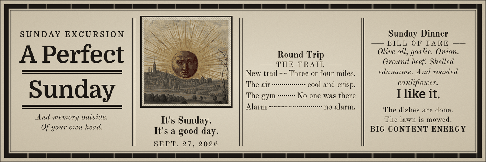

A Perfect Sunday

I woke up at noon, no alarm.
I had coffee. And then I went and I grabbed some more coffee. And then I did some work. With Grokbot.
I went on a hike. Three or four miles. Hiking. The air was cool and crisp. Beautiful weather. Out right now. I got. I don't know. Six thousand steps in.
And I went to a new trail. I was gonna go to an old one that I liked but. You know. Some things repetition is good but when it comes to experiences even though all the trails kinda look the same it's nice to go to a new one.
So I had an excellent hike. Discovered a new place nearby.
And then did some more work with Grokbot, migrating my notes, trying to figure out how to just centralize things more instead of having to go back and find things and put them in the right space. Desperately need some external storage or another computer going on.
also , last week, really inspired by an interview I had with my colleague about his setup and just how many computers he has running and how many workflows and things for his personal, but also his work. It was so exciting to get to interview people that I work with. That's my favorite part of my job is talking to people, I think. And then getting to talk to them about stuff they are really excited to talk about.
Everything just feels very exciting and amazing, and then at the same time, I've got this backlog of, like, brutal. Crazy, emotional, psychological trauma that I'm trying to just... work through and keep building and, and making, and...
Today was a perfect day for... going to the gym, after I had already done a workout at the, at the trail. No one was there, I got to blast my music on the speaker. And my energy has been great all day.
I didn't eat, I fasted all day. It's five o'clock now, so I should probably eat, I guess. That's my favorite though, I love not eating until dinner time. And then eating whatever I want until I fall asleep. My body seems to like it too.
I also, I've been sleeping a lot lately. Like over twelve hours per session. I only need five or six. I feel better when I only get five or six. I feel more tired when I sleep more. I need to break out of that habit of sleeping in. I think with the weather, a morning walk is the perfect time of year for that.
We'll see if I wake up, though. Sometimes my alarm doesn't go off, so I have to set it three or four. at one point, I think I was up to, like, seven or eight paranoid alarm clocks. Because they wouldn't go off, or the volume would be changed on how loud they would go off, cause just . Bugs in all the tools and applications.
Anyway, today was fantastic.
My neighbour even drove on my lawn and I didn't get mad. I came in from a new entrance and he was going to his house. And it's like a gravel road. So you just make space. Sometimes you can both get through and other times you have to pull off to the side when you're going in opposite directions. But he just straight up pulled right up in my lawn all the way so I could go by. And I didn't even get mad at all.
I didn't wonder about his Florida license plates. Cause that doesn't mean anything. Or the fact that I posted. An ad on my journal to not drive on my lawn last night. I didn't think about that either.
Definitely not thinking about that.
Just about what an amazing day it is, how hungry I am, how excited I am about this very simple dinner that doesn't have to please anyone else's palate but mine. Olive oil, garlic. Onion. Ground beef. Shelled edamame. And roasted cauliflower.
No one in my family is gonna eat that shit. To me, that is the best, most exciting meal. Lots of veggies, lots of meat. I don't have to cook another meal for anyone else. I don't have to worry about if they'll like it.
I like it.
The dishes are done. The lawn is mowed. There's a million other things I could do, but why would I?
It's Sunday. It's a good day.
Not every time you write. It has to be like this amazing profound thing. Sometimes you just document what you did that day or why you did it. Or how you felt. And then you have a timestamp. And a date.
And memory outside. Of your own head.
It takes a lot of work, and you have to be driven to want to keep a journal. It's definitely an exercise in vanity. However, it is also an exercise in documentation, archive, memory, and truth outside of your meat computer. One that you can query a lot easier.
I think it's the most exciting thing right now. That's why I like the interviews at work. You're taking these things that nobody really makes dedicated time for to talk about, asking them questions. And then translating it. Into a format that other people can read and reflect on. If they have time to.
I hardly read. Much these days. I used to be really into reading, but I think right now I'm, like, just so interested in the documentation part. Like, what a good workflow is. When things are just going so fast.
There's so much I wanna know about people that the only way I could possibly know it is if I read their daily journal. Or was able to query it or something. Or to have conversation with them in person for a long time.
I want to also note on the differences in the set of men available on Tinder versus Hinge. It's very different. Experience from one app to the other.
Tinder, it's like every guy I'm just not interested in, not sexually attracted, there's nothing intellectually exciting. I'm talking like hundreds of men I've looked at. There's maybe three out of , let's say, I've looked at 300 profiles in one week. Three out of 300, what percentage success rate is that?
And then I got on Hinge last night. And I found like eight people in a row that I can see myself having a conversation with and potentially going on a date with. And I only looked at maybe thirty profiles. So what is the, and started a few conversations, so what does that rate look like?
One, no, two weeks with Tinder. Three conversations that went nowhere. Maybe thirty minutes to an hour on Hinge. And more talking. Nothing has happened yet, so I'll let you know. But I think it's a different experience for sure.
What else? I get to see my kids this week. I am looking forward to meeting some folks this week.
I have a thing to look forward to that is not banal.
Added 5:29 PM ET:
The fact that I was able to go on this hike today after I've been targeted when I went out in public before specifically like when the guy drove his truck at me and a bunch of moms with their kids on the trail. The fact that I felt safe enough to go out today. Do something new, be around people is fucking huge.
I think. I'm just really proud of myself.
That I never let. These fringe. Weird experiences. Be the actual story. Because they're the most boring and banal part of all of it.
And I should feel free to go wherever I want, whenever I want, without threat to my own safety.
And if someone wants to fight me. Then I wish they would just. Not be a little pussy about it and come to my face and tell me what's going on instead of doing these shady things that are just meant to like make someone feel unsafe.
I had a great fucking day. No one fucked with me. I wasn't thinking about that. I was just enjoying life.
It was wonderful.